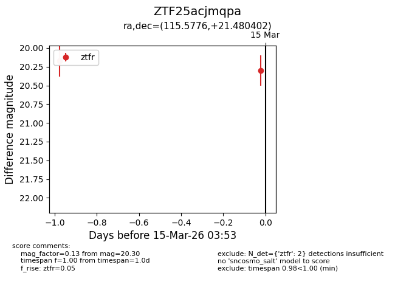
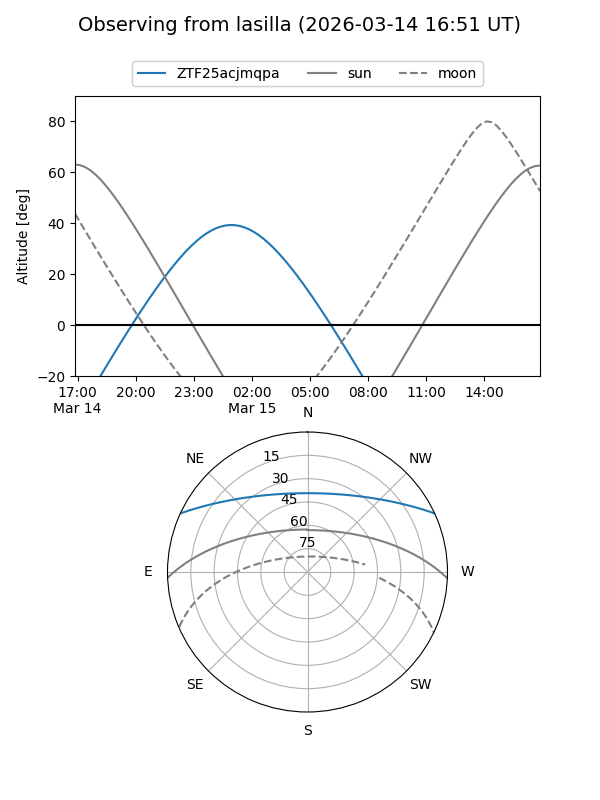
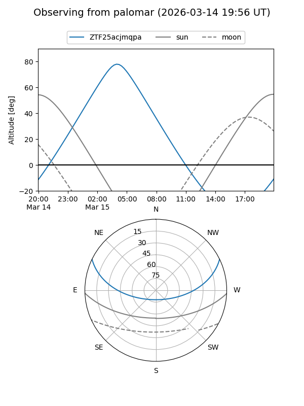

ZTF25acjmqpa
Target ZTF25acjmqpa at 2026-03-15 03:55
Aliases and brokers:
FINK: link
Lasair: link
ALeRCE: link
alt names
ZTF25acjmqpa (ztf,fink_ztf)
Coordinates:
equatorial (ra, dec) = 115.5776,+21.48040
equatorial (HMS+DMS) = 07:42:18.62,+21:28:49.45
galactic (l, b) = (198.5661,+20.44445)
Flags:
Photometry:
last ztfr=20.30
2 ztfr detections
Lightcurve

Visibility


Additional plots